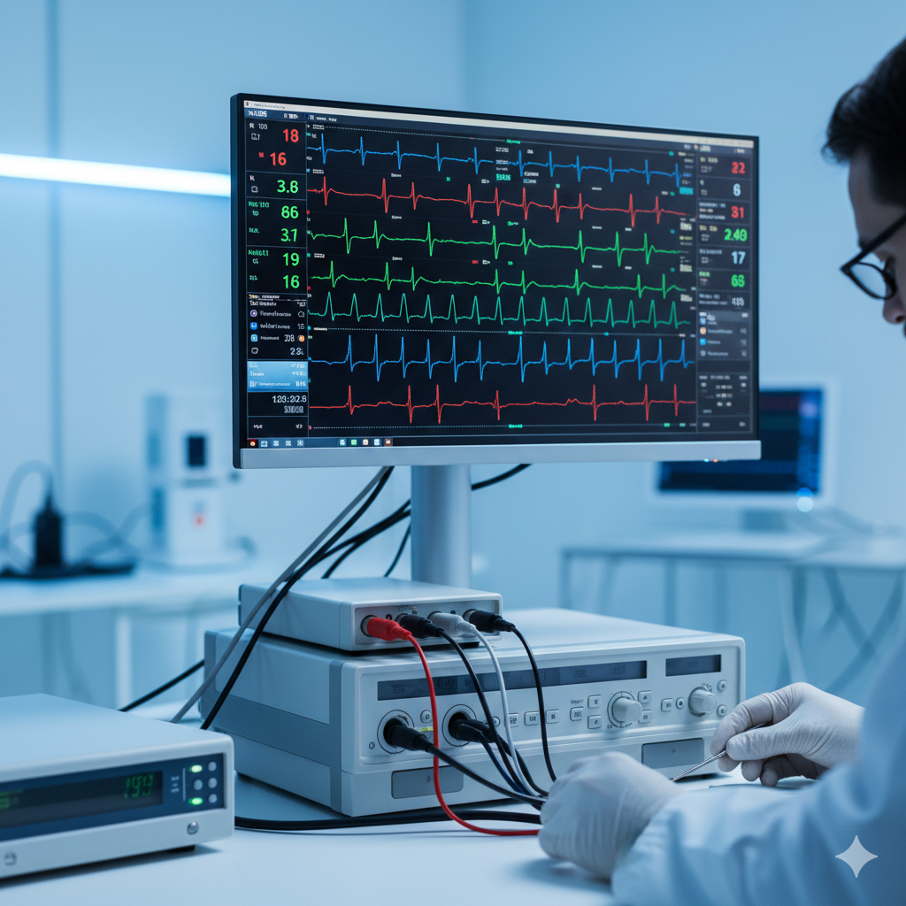
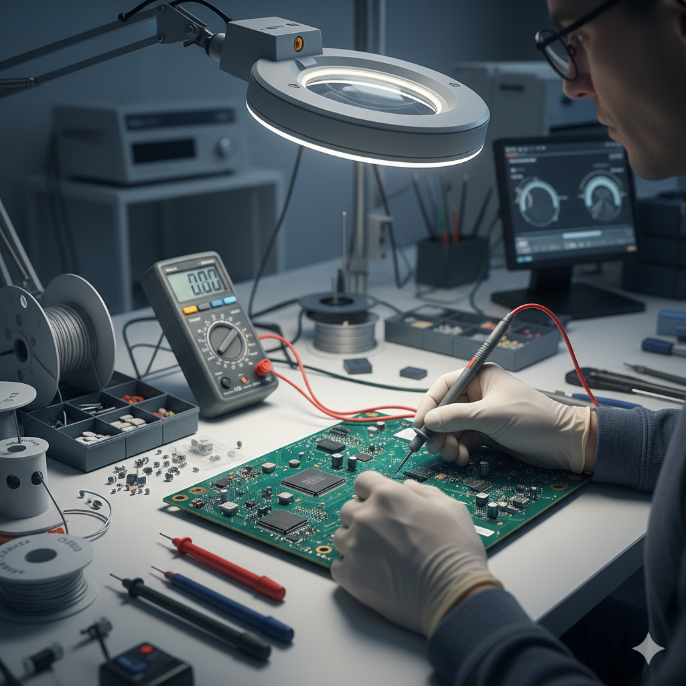

لأن سلامة المرضى أولويتنا، نقدم أدق حلول الصيانة والمعايرة.
اطلب خدمة الآنبرامج صيانة دورية لضمان استمرارية عمل الأجهزة الطبية بكفاءة ومنع الأعطال المفاجئة.

ضبط ومعايرة الأجهزة وفق المعايير الدولية لضمان دقة التشخيص وسلامة المرضى.

فريق متخصص لإصلاح الأعطال المعقدة وتوفير قطع الغيار الأصلية في وقت قياسي.
يرجى ملء النموذج أدناه وسيقوم فريقنا التقني بالتواصل معكم خلال أقل من ساعة.
نحن متاحون يوميا علي مدار 24 ساعة للحالات الطارئة في المستشفيات.
support@medicalzone.com
المنطقة الطبية، مصر - محافظة سوهاج